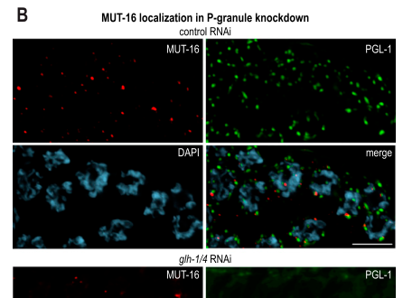

MUT-16 is a glutamine/asparagine (Q/N)-rich scaffold protein essential for the formation of Mutator foci, perinuclear phase-separated condensates that serve as sites for siRNA amplification in the C. elegans germline. MUT-16 nucleates the assembly of the mutator complex, recruiting RNA-dependent RNA polymerase RRF-1 and other mutator proteins to form a specialized RNA processing compartment. Through its scaffold function, MUT-16 is required for RNA interference (RNAi) and the silencing of more than 2,000 endogenous genes, including transposable elements. Mutator foci are adjacent to, but distinct from, P granules, and both represent key germline RNA regulatory compartments.
| GO Term | Evidence | Action | Reason |
|---|---|---|---|
|
GO:1990633
mutator focus
|
IDA
PMID:22713602 MUT-16 promotes formation of perinuclear mutator foci requir... |
ACCEPT |
Summary: MUT-16 localizes to punctate foci at the periphery of germline nuclei, termed Mutator foci (PMID:22713602). This is the defining paper that characterized Mutator foci as a distinct subcellular compartment. MUT-16 is not merely a component but is specifically required for the formation of Mutator foci - in its absence, these foci fail to form.
Reason: This is a core annotation supported by direct experimental evidence. PMID:22713602 demonstrates that MUT-16 localizes to Mutator foci using fluorescent protein tagging and microscopy. The paper establishes that MUT-16 is essential for Mutator foci formation, making this localization annotation highly accurate.
Supporting Evidence:
PMID:22713602
Here we show that each of the six mutator proteins localizes to punctate foci at the periphery of germline nuclei. The Mutator foci are adjacent to P granules but are not dependent on core P-granule components or other RNAi pathway factors for their formation or stability.
PMID:22713602
The glutamine/asparagine (Q/N)-rich protein MUT-16 is specifically required for the formation of a protein complex containing the mutator proteins, and in its absence, Mutator foci fail to form at the nuclear periphery.
file:worm/mut-16/mut-16-deep-research-falcon.md
MUT-16 foci are **adjacent to P granules** (e.g., PGL-1-marked), consistent with spatially coupled but compositionally distinct nuage subcompartments.
|
|
GO:1990633
mutator focus
|
IDA
PMID:24684932 MUT-14 and SMUT-1 DEAD box RNA helicases have overlapping ro... |
ACCEPT |
Summary: PMID:24684932 confirms MUT-16 localization to Mutator foci and its role in nucleating the mutator complex. The study demonstrates that MUT-16 is the scaffold for the mutator complex that silences more than 2,000 C. elegans genes.
Reason: This annotation is well-supported. PMID:24684932 provides additional evidence for MUT-16 localization to Mutator foci while investigating the roles of MUT-14 and SMUT-1 DEAD box helicases that function in this compartment.
Supporting Evidence:
PMID:24684932
More than 2,000 C. elegans genes are targeted for RNA silencing by the mutator complex, a specialized small interfering RNA (siRNA) amplification module which is nucleated by the Q/N-rich protein MUT-16.
PMID:24684932
The mutator complex localizes to Mutator foci adjacent to P granules at the nuclear periphery in germ cells.
|
|
GO:1990633
mutator focus
|
IDA
PMID:32338603 A tudor domain protein, SIMR-1, promotes siRNA production at... |
ACCEPT |
Summary: PMID:32338603 further characterizes Mutator foci as phase-separated condensates and confirms MUT-16 localization. This study identifies SIMR-1 foci as distinct from but adjacent to both P granules and Mutator foci.
Reason: Provides additional confirmation of MUT-16 localization to Mutator foci and adds the important characterization that these are phase-separated condensates, consistent with MUT-16's Q/N-rich intrinsically disordered regions.
Supporting Evidence:
PMID:32338603
SIMR-1 also localizes to distinct subcellular foci adjacent to P granules and Mutator foci, two phase-separated condensates that are the sites of piRNA-dependent mRNA recognition and mutator complex-dependent siRNA amplification, respectively.
file:worm/mut-16/mut-16-deep-research-falcon.md
Mutator foci display multiple properties consistent with **liquid–liquid phase separation**: spherical morphology, sensitivity to 1,6-hexanediol, temperature sensitivity, concentration-threshold behavior, and rapid partial FRAP recovery.
|
|
GO:0003674
molecular_function
|
ND
GO_REF:0000015 |
MODIFY |
Summary: This is a placeholder annotation indicating no specific molecular function has been assigned. However, based on current literature, MUT-16 functions as a molecular condensate scaffold that nucleates assembly of the mutator complex.
Reason: MUT-16 has a well-characterized molecular function as a scaffold protein that brings together components of the mutator complex through its Q/N-rich intrinsically disordered regions, promoting phase separation and complex assembly. This function is analogous to molecular condensate scaffold activity.
Proposed replacements:
molecular condensate scaffold activity
Supporting Evidence:
PMID:22713602
The glutamine/asparagine (Q/N)-rich protein MUT-16 is specifically required for the formation of a protein complex containing the mutator proteins, and in its absence, Mutator foci fail to form at the nuclear periphery.
PMID:24684932
More than 2,000 C. elegans genes are targeted for RNA silencing by the mutator complex, a specialized small interfering RNA (siRNA) amplification module which is nucleated by the Q/N-rich protein MUT-16.
file:worm/mut-16/mut-16-deep-research-falcon.md
MUT-16 is **not an enzyme** with a defined catalytic reaction; instead, its primary function is **structural/organizational**
file:worm/mut-16/mut-16-deep-research-falcon.md
a **C-terminal region (JKL; aa ~773–1050)** is sufficient for foci formation and is ~70% disordered; it is necessary and sufficient for Mutator-foci assembly.
|
|
GO:0030422
siRNA processing
|
IMP
PMID:22713602 MUT-16 promotes formation of perinuclear mutator foci requir... |
ACCEPT |
Summary: MUT-16 is required for siRNA amplification. Genes with high siRNA levels (indicative of multiple amplification rounds) are disproportionally affected in mut-16 mutants. RdRP RRF-1 colocalizes with MUT-16 at Mutator foci.
Reason: The GO term siRNA processing includes siRNA amplification by RNA-dependent RNA polymerase according to the term definition. PMID:22713602 provides strong evidence that MUT-16 is required for this process, with mutants showing disproportionate effects on genes requiring siRNA amplification.
Supporting Evidence:
PMID:22713602
The RdRP RRF-1 colocalizes with MUT-16 at Mutator foci, suggesting a role for Mutator foci in siRNA amplification.
PMID:22713602
Furthermore, we demonstrate that genes that yield high levels of siRNAs, indicative of multiple rounds of siRNA amplification, are disproportionally affected in mut-16 mutants compared with genes that yield low levels of siRNAs.
PMID:22713602
We propose that the mutator proteins and RRF-1 constitute an RNA processing compartment required for siRNA amplification and RNA silencing.
file:worm/mut-16/mut-16-deep-research-falcon.md
One study baseline reports that **~2,300 mutator-target genes** showed **>3-fold depletion** of mutator-dependent 22G-RNAs in **mut-16**.
|
|
GO:0005634
nucleus
|
IDA
PMID:12906791 A genome-wide screen identifies 27 genes involved in transpo... |
MODIFY |
Summary: PMID:12906791 was an early genome-wide screen that identified mut-16 as required for transposon silencing. The nuclear localization annotation may be imprecise - Mutator foci are actually in the perinuclear cytoplasm, adjacent to the nuclear envelope, not within the nucleus.
Reason: Later studies (PMID:22713602) clearly established that MUT-16 localizes to perinuclear Mutator foci in the germline cytoplasm, adjacent to P granules. These foci are at the nuclear periphery but in the cytoplasm, not inside the nucleus. The more precise annotation is to mutator focus (GO:1990633).
Proposed replacements:
mutator focus
Supporting Evidence:
PMID:22713602
Here we show that each of the six mutator proteins localizes to punctate foci at the periphery of germline nuclei.
PMID:22713602
The Mutator foci are adjacent to P granules but are not dependent on core P-granule components or other RNAi pathway factors for their formation or stability.
file:worm/mut-16/mut-16-deep-research-falcon.md
MUT-16 localizes to **punctate perinuclear foci** throughout the germline.
|
|
GO:0005737
cytoplasm
|
IDA
PMID:12906791 A genome-wide screen identifies 27 genes involved in transpo... |
KEEP AS NON CORE |
Summary: MUT-16 is indeed cytoplasmic, specifically in perinuclear Mutator foci. While technically correct, this annotation is too general given the specific localization to Mutator foci that is now well-established.
Reason: The cytoplasm annotation is technically correct since Mutator foci are cytoplasmic structures at the nuclear periphery. However, it is less informative than the mutator focus annotation (GO:1990633) which captures the specific subcellular localization.
Supporting Evidence:
PMID:22713602
Here we show that each of the six mutator proteins localizes to punctate foci at the periphery of germline nuclei.
file:worm/mut-16/mut-16-deep-research-falcon.md
In somatic contexts MUT-16 is more diffuse and Mutator foci are far less prominent.
|
|
GO:0035194
regulatory ncRNA-mediated post-transcriptional gene silencing
|
IMP
PMID:12906791 A genome-wide screen identifies 27 genes involved in transpo... |
ACCEPT |
Summary: PMID:12906791 identified mut-16 in a genome-wide screen for genes involved in transposon silencing, demonstrating a role in gene silencing. MUT-16 is required for the mutator pathway that produces secondary siRNAs for post-transcriptional gene silencing.
Reason: This is a core function of MUT-16. The mutator complex synthesizes secondary siRNAs (22G-RNAs) that mediate post-transcriptional gene silencing of transposons and other endogenous targets. PMID:12906791 demonstrates mut-16 mutants have defective transposon silencing, and later work confirms this is through the siRNA pathway.
Supporting Evidence:
PMID:12906791
We identified 27 such genes, among which are mut-16, a mutator that was previously found but not identified at the molecular level
PMID:12906791
Interestingly, the transposon-silencing mechanism shares factors with the RNAi machinery.
PMID:22713602
We propose that the mutator proteins and RRF-1 constitute an RNA processing compartment required for siRNA amplification and RNA silencing.
file:worm/mut-16/mut-16-deep-research-falcon.md
Functions in the **WAGO-class 22G-RNA branch** of RNAi downstream of primary triggers such as piRNAs and exogenous RNAi
file:worm/mut-16/mut-16-deep-research-falcon.md
A key mechanistic model in recent reviews is that primary targeting can trigger cleavage and then **pUGylation** (addition of poly(UG) tails) by **MUT-2/RDE-3**, which helps recruit RdRP activity to generate amplified secondary 22G-RNAs.
|
|
GO:0010526
transposable element silencing
|
IMP
PMID:12906791 A genome-wide screen identifies 27 genes involved in transpo... |
NEW |
Summary: MUT-16 is required for transposon silencing in the C. elegans germline. PMID:12906791 identified mut-16 in a genome-wide screen for genes required to silence Tc1 transposon activity.
Reason: This annotation is not currently in the GOA file but represents a core function of MUT-16. The original screen that named mut-16 as a MUTator gene was based on transposon activation phenotypes. This is a more specific annotation than the general gene silencing term.
Supporting Evidence:
PMID:12906791
To better understand the mechanism of transposon silencing, we performed a genome-wide RNAi screen for genes that, when silenced, cause transposition of Tc1 in the C. elegans germline. We identified 27 such genes, among which are mut-16, a mutator that was previously found but not identified at the molecular level
file:worm/mut-16/mut-16-deep-research-falcon.md
The Mutator/WAGO 22G-RNA system is widely framed as a **genome surveillance/defense** pathway that limits transposon expression/mobilization and supports fertility, with MUT-16 as a core scaffold.
file:worm/mut-16/mut-16-deep-research-falcon.md
the **Tc1** DNA transposon has **~32 intact copies** in the genome
|
The research report should be a detailed narrative explaining the function, biological processes, and localization of the gene product. Citations should be given for all claims.
You should prioritize authoritative reviews and primary scientific literature when conducting research. You can supplement
this with annotations you find in gene/protein databases, but these can be outdated or inaccurate.
We are specifically interested in the primary function of the gene - for enzymes, what reaction is catalyzed, and what is the substrate specificity? For transporters, what is the substrate? For structural proteins or adapters, what is the broader structural role? For signaling molecules, what is the role in the pathway.
We are interested in where in or outside the cell the gene product carries out its function.
We are also interested in the signaling or biochemical pathways in which the gene functions. We are less interested in broad pleiotropic effects, except where these elucidate the precise role.
Include evidence where possible. We are interested in both experimental evidence as well as inference from structure, evolution, or bioinformatic analysis. Precise studies should be prioritized over high-throughput, where available.
The Caenorhabditis elegans gene mut-16 (UniProt O62011) encodes MUT-16, a low-complexity, intrinsically disordered scaffold protein that nucleates perinuclear “Mutator foci” and organizes the Mutator complex, a germline-enriched small-RNA amplification module required for robust RNA silencing. (phillips2012mut16promotesformation pages 1-2, uebel2018distinctregionsof pages 1-2, uebel2018distinctregionsof pages 5-7)
MUT-16 is not an enzyme with a defined catalytic reaction; instead, its primary function is structural/organizational—concentrating and coordinating multiple enzymatic and RNA-binding factors (e.g., RdRP RRF-1; poly(UG) polymerase MUT-2/RDE-3; exonuclease MUT-7; helicases; nucleases) that collectively generate secondary 22G-RNAs that load into WAGO Argonautes to enforce gene and transposon silencing. (phillips2012mut16promotesformation pages 5-7, sundby2021connectingthedots pages 6-7, ouyang2022nuagecondensatesaccelerators pages 1-2)
Primary mechanistic papers that cloned/characterized mut-16 unambiguously define MUT-16 as the core Mutator-foci protein required for siRNA amplification in C. elegans (not another organism’s “mut-16”). (zhang2011mut16andother pages 1-2, phillips2012mut16promotesformation pages 1-2)
Key identifiers used in the literature are consistent with your UniProt context: mut-16 encodes MUT-16, described as a “Mutator” class factor required for Mutator foci and secondary siRNA amplification. (phillips2012mut16promotesformation pages 1-2, zhang2011mut16andother pages 1-2)
Mutator foci are punctate perinuclear compartments in germ cells that contain MUT-16 and multiple “mutator class” proteins; they sit near nuclear pores and are adjacent to other nuage condensates (notably P granules). (phillips2012mut16promotesformation pages 1-2, phillips2012mut16promotesformation pages 4-5, uebel2018distinctregionsof pages 13-14)
The Mutator complex is an assembly of proteins required to generate mutator-dependent secondary siRNAs, particularly WAGO-class 22G-RNAs; reviews and primary studies place MUT-16 as the seed/scaffold for this assembly. (phillips2022germgranulesand pages 6-7, sundby2021connectingthedots pages 6-7)
In C. elegans, endogenous RNAi includes abundant 22G-RNAs (22-nt, typically 5′G) made by RNA-dependent RNA polymerases (RdRPs). Reviews emphasize that RRF-1 and EGO-1 are key RdRPs, with the Mutator-foci machinery strongly associated with WAGO-class amplification. (sundby2021connectingthedots pages 1-2, sundby2021connectingthedots pages 6-7)
A central conceptual split is:
- WAGO-class 22G-RNAs: enriched in silencing pathways (including transposons and many “non-self”/foreign-like targets). (sundby2021connectingthedots pages 6-7, phillips2022germgranulesand pages 6-7)
- CSR-1-class 22G-RNAs: associated with “licensing”/protection of germline gene expression and antagonizing inappropriate silencing. (sundby2021connectingthedots pages 6-7, ouyang2022nuagecondensatesaccelerators pages 1-2)
A key mechanistic model in recent reviews is that primary targeting can trigger cleavage and then pUGylation (addition of poly(UG) tails) by MUT-2/RDE-3, which helps recruit RdRP activity to generate amplified secondary 22G-RNAs. (ouyang2022nuagecondensatesaccelerators pages 1-2, sundby2021connectingthedots pages 6-7)
Multiple studies describe MUT-16 as Q/N-rich and highly intrinsically disordered, functioning as a scaffold that recruits/organizes Mutator components rather than catalyzing a chemical reaction. (uebel2018distinctregionsof pages 1-2, uebel2018distinctregionsof pages 4-5)
CRISPR deletion mapping and interaction/localization assays identify distinct MUT-16 regions that mediate recruitment/localization of different Mutator complex proteins (e.g., MUT-2, MUT-7, RDE-2, MUT-14, MUT-15, RRF-1, RDE-8, NYN-1/2). (uebel2018distinctregionsof pages 5-7, uebel2018distinctregionsof pages 11-13)
A key structural-functional conclusion is that a C-terminal region (JKL; aa ~773–1050) is sufficient for foci formation and is ~70% disordered; it is necessary and sufficient for Mutator-foci assembly. (uebel2018distinctregionsof pages 13-14)
Mutator foci display multiple properties consistent with liquid–liquid phase separation: spherical morphology, sensitivity to 1,6-hexanediol, temperature sensitivity, concentration-threshold behavior, and rapid partial FRAP recovery. (uebel2018distinctregionsof pages 13-14)
Quantitatively, FRAP of MUT-16::GFP foci (whole-focus bleaching) showed t1/2 = 7.2 ± 1.0 s (SEM; n=5) and recovery to ~35% of pre-bleach intensity, consistent with mixed mobile/immobile fractions within the condensate. (uebel2018distinctregionsof pages 11-13)
MUT-16 localizes to punctate perinuclear foci throughout the germline. (phillips2012mut16promotesformation media fee9793d)
MUT-16 foci are adjacent to P granules (e.g., PGL-1-marked), consistent with spatially coupled but compositionally distinct nuage subcompartments. (phillips2012mut16promotesformation media 59dbc424)
Reviews and primary studies emphasize that nuage covers a majority of nucleopore-rich nuclear periphery and that P granules associate with roughly ~75% of nuclear pores—a spatial context in which Mutator foci sit adjacent to P granules and likely capture/exported RNAs for surveillance and amplification. (sundby2021connectingthedots pages 6-7, ouyang2022nuagecondensatesaccelerators pages 1-2)
Loss of mut-16 disrupts Mutator foci and strongly impairs RNA silencing, consistent with Mutator foci being key sites/organizers of secondary siRNA amplification. (phillips2012mut16promotesformation pages 1-2, phillips2012mut16promotesformation pages 5-7)
The Mutator/WAGO 22G-RNA system is widely framed as a genome surveillance/defense pathway that limits transposon expression/mobilization and supports fertility, with MUT-16 as a core scaffold. (phillips2022germgranulesand pages 6-7, phillips2012mut16promotesformation pages 1-2)
A concrete transposon statistic used in foundational discussions is that the Tc1 DNA transposon has ~32 intact copies in the genome, highlighting the need for genome defense mechanisms (including Mutator/WAGO pathways). (phillips2012mut16promotesformation pages 1-2)
One study baseline reports that ~2,300 mutator-target genes showed >3-fold depletion of mutator-dependent 22G-RNAs in mut-16. (phillips2014mut14andsmut1 pages 3-4)
A 2023 peer-reviewed study advanced the model of germline nuage as multiple adjacent, demixed condensates (P granules, Z granules, SIMR foci, Mutator foci), with Mutator foci described as nucleated by MUT-16 and essential for secondary siRNA amplification. (Publication: 2023-12; URL: https://doi.org/10.1242/dev.202284) (uebel2023caenorhabditiselegansgerma pages 1-2)
A 2024 Nature Communications paper identified a new germ-granule subcompartment (“E compartment/E granule”) enriched for EGO-1 (with DRH-3, EKL-1, and IDR proteins), and reported that EGO-1 localization there enables synthesis of a specialized 22G-RNA class derived exclusively from 5′ regions of a subset of germline mRNAs—refining how distinct compartments partition distinct 22G-RNA programs relative to MUT-16-marked Mutator foci. (Publication: 2024-07; URL: https://doi.org/10.1038/s41467-024-50027-3) (chen2024germgranulecompartments pages 1-2)
A 2024 Nature Communications study reported that HRDE-2 localizes to SIMR foci and promotes correct small-RNA loading onto the nuclear Argonaute HRDE-1, thereby supporting proper use of WAGO-class 22G-RNAs and avoiding misdirected chromatin marking—strengthening a broader framework in which subcompartment localization helps ensure pathway specificity. (Publication: 2024-02; URL: https://doi.org/10.1038/s41467-024-45245-8) (chen2024hrde2drivessmall pages 1-2)
Because mut-16 is required for Mutator-foci integrity and secondary siRNA amplification, it is routinely used to test whether a silencing phenotype depends on mutator-dependent amplification versus other branches (e.g., upstream primary triggers or parallel CSR-1 licensing). (zhang2011mut16andother pages 1-2, phillips2022germgranulesand pages 6-7)
MUT-16 and Mutator foci provide an experimentally accessible system to investigate how phase-separated condensates can accelerate, focus, or constrain biochemical reactions in vivo. (uebel2018distinctregionsof pages 13-14, ouyang2022nuagecondensatesaccelerators pages 1-2)
A 2022 perspective review argues nuage condensates may act as “circuit breakers” that prevent dangerous runaway silencing, by spatially organizing cleavage, pUGylation, and RdRP amplification steps while balancing competing small-RNA pathways (e.g., silencing vs licensing). (Publication: 2022-11; URL: https://doi.org/10.1261/rna.079003.121) (ouyang2022nuagecondensatesaccelerators pages 1-2)
Similarly, germ-granule reviews emphasize segregation of opposing pathways (WAGO silencing vs CSR-1 licensing) and argue that subcompartmentalization supports fidelity and germline expression “memory.” (phillips2022germgranulesand pages 6-7, sundby2021connectingthedots pages 6-7)
| Category | Summary |
|---|---|
| Identity | - Gene/protein verified as C. elegans mut-16 / MUT-16, matching UniProt O62011 and ORF B0379.3 in the literature. - MUT-16 is described as a Q/N-rich, intrinsically disordered protein that nucleates Mutator foci rather than a catalytic enzyme. (phillips2012mut16promotesformation pages 1-2, uebel2018distinctregionsof pages 1-2, zhang2011mut16andother pages 1-2) |
| Molecular role | - Primary role is scaffolding/assembly of the Mutator complex required for secondary siRNA (22G-RNA) amplification. - Distinct MUT-16 regions recruit different client proteins; the C-terminal disordered region is necessary and sufficient for foci formation and supports phase separation. (uebel2018distinctregionsof pages 4-5, uebel2018distinctregionsof pages 1-2, uebel2018distinctregionsof pages 11-13) |
| Complex/partners | - Recruits or is required for localization of MUT-2/RDE-3, MUT-7, MUT-14, SMUT-1, RDE-2, MUT-15, RRF-1, RDE-8, NYN-1/2. - Loss of mut-16 disrupts colocalization/co-IP among mutator proteins, indicating it is the core organizational hub of the complex. (uebel2018distinctregionsof pages 4-5, phillips2012mut16promotesformation pages 5-7, uebel2018distinctregionsof pages 5-7) |
| Subcellular localization | - Localizes to perinuclear Mutator foci on the cytoplasmic side of germline nuclei. - Mutator foci are adjacent to but distinct from P granules and associate with nuclear pores within germline nuage architecture. - In somatic contexts MUT-16 is more diffuse and Mutator foci are far less prominent. (uebel2018distinctregionsof pages 2-4, phillips2012mut16promotesformation pages 4-5, uebel2018distinctregionsof pages 13-14, phillips2012mut16promotesformation media fee9793d) |
| Pathway context | - Functions in the WAGO-class 22G-RNA branch of RNAi downstream of primary triggers such as piRNAs and exogenous RNAi. - Current model: target cleavage and pUGylation by MUT-2/RDE-3 mark RNAs for RdRP-dependent 22G-RNA synthesis in Mutator foci; this branch is distinct from CSR-1/EGO-1 licensing pathways. (phillips2022germgranulesand pages 6-7, sundby2021connectingthedots pages 6-7, ouyang2022nuagecondensatesaccelerators pages 1-2, sundby2021connectingthedots pages 1-2) |
| Key experimental evidence/assays | - Mutant analysis/RNAi: mut-16 loss abolishes Mutator foci and impairs germline and somatic RNAi. - Imaging: fluorescent MUT-16 reporters show punctate perinuclear foci adjacent to P granules. - Co-IP/IP-MS and CRISPR deletion mapping identified recruited partners and modular interaction regions. - FRAP, heat stress, and 1,6-hexanediol assays support condensate-like behavior. (phillips2012mut16promotesformation pages 5-7, uebel2018distinctregionsof pages 5-7, uebel2018distinctregionsof pages 11-13, phillips2012mut16promotesformation media fee9793d) |
| Quantitative/statistical findings | - In mut-16, about ~2,300 target genes showed >3-fold depletion of mutator-dependent 22G-RNAs in one analysis. - MUT-16 FRAP recovery showed t1/2 = 7.2 ± 1.0 s with recovery to ~35% of pre-bleach intensity, consistent with mobile and immobile condensate fractions. - P granules associate with roughly ~75% of nuclear pores, relevant to spatial organization of adjacent Mutator foci. (phillips2014mut14andsmut1 pages 3-4, uebel2018distinctregionsof pages 11-13, sundby2021connectingthedots pages 6-7) |
| 2023-2024 updates | - 2023 work refined nuage architecture: P granules form a toroidal shell around other compartments, and Mutator foci occupy a distinct adjacent subdomain that preferentially associates with RNAi-targeted RNAs. - 2024 work identified the E granule for specialized EGO-1-dependent 5′-region 22G-RNA production, sharpening the contrast between Mutator-foci/WAGO and E-granule/CSR-related functions. - 2024 studies further connected Mutator-foci organization to Argonaute specificity and condensate immiscibility in germ granules. (uebel2023caenorhabditiselegansgerma pages 1-2, chen2024germgranulecompartments pages 1-2, uebel2023caenorhabditiselegansgerm pages 1-4, chen2024hrde2drivessmall pages 1-2) |
| Applications/uses | - mut-16 mutants are widely used as functional tools to test whether silencing depends on mutator-complex amplification versus other RNAi branches. - Used in studies of transposon repression, heritable silencing/TEI, stress responses, and endogenous transgene silencing as a pathway-defining perturbation. - Expert reviews use MUT-16 as a model scaffold for studying how condensate compartmentalization can enhance precision while avoiding runaway silencing. (phillips2022germgranulesand pages 6-7, sundby2021connectingthedots pages 6-7, ouyang2022nuagecondensatesaccelerators pages 1-2) |
Table: This table concisely summarizes the verified identity, mechanism, localization, pathway context, and recent advances for C. elegans MUT-16 (UniProt O62011). It is useful as a citation-backed functional annotation snapshot focused on evidence from the gathered literature context.
This report is constrained to claims directly supported in the retrieved full-text evidence. Some potentially relevant 2023–2024 preprints mentioning MUT-16 were retrieved in search results but not used for major claims without supportive extracted evidence here. (uebel2023caenorhabditiselegansgerma pages 1-2, chen2024germgranulecompartments pages 1-2, chen2024hrde2drivessmall pages 1-2)
References
(phillips2012mut16promotesformation pages 1-2): Carolyn M. Phillips, Taiowa A. Montgomery, Peter C. Breen, and Gary Ruvkun. Mut-16 promotes formation of perinuclear mutator foci required for rna silencing in the c. elegans germline. Genes & development, 26 13:1433-44, Jul 2012. URL: https://doi.org/10.1101/gad.193904.112, doi:10.1101/gad.193904.112. This article has 239 citations and is from a highest quality peer-reviewed journal.
(uebel2018distinctregionsof pages 1-2): Celja J. Uebel, Dorian C. Anderson, Lisa M. Mandarino, Kevin I. Manage, Stephan Aynaszyan, and Carolyn M. Phillips. Distinct regions of the intrinsically disordered protein mut-16 mediate assembly of a small rna amplification complex and promote phase separation of mutator foci. PLOS Genetics, 14:e1007542, Jul 2018. URL: https://doi.org/10.1371/journal.pgen.1007542, doi:10.1371/journal.pgen.1007542. This article has 64 citations and is from a domain leading peer-reviewed journal.
(uebel2018distinctregionsof pages 5-7): Celja J. Uebel, Dorian C. Anderson, Lisa M. Mandarino, Kevin I. Manage, Stephan Aynaszyan, and Carolyn M. Phillips. Distinct regions of the intrinsically disordered protein mut-16 mediate assembly of a small rna amplification complex and promote phase separation of mutator foci. PLOS Genetics, 14:e1007542, Jul 2018. URL: https://doi.org/10.1371/journal.pgen.1007542, doi:10.1371/journal.pgen.1007542. This article has 64 citations and is from a domain leading peer-reviewed journal.
(phillips2012mut16promotesformation pages 5-7): Carolyn M. Phillips, Taiowa A. Montgomery, Peter C. Breen, and Gary Ruvkun. Mut-16 promotes formation of perinuclear mutator foci required for rna silencing in the c. elegans germline. Genes & development, 26 13:1433-44, Jul 2012. URL: https://doi.org/10.1101/gad.193904.112, doi:10.1101/gad.193904.112. This article has 239 citations and is from a highest quality peer-reviewed journal.
(sundby2021connectingthedots pages 6-7): Adam E. Sundby, Ruxandra I. Molnar, and Julie M. Claycomb. Connecting the dots: linking caenorhabditis elegans small rna pathways and germ granules. May 2021. URL: https://doi.org/10.1016/j.tcb.2020.12.012, doi:10.1016/j.tcb.2020.12.012. This article has 74 citations and is from a domain leading peer-reviewed journal.
(ouyang2022nuagecondensatesaccelerators pages 1-2): John Paul Tsu Ouyang and Geraldine Seydoux. Nuage condensates: accelerators or circuit breakers for srna silencing pathways? RNA, 28:58-66, Nov 2022. URL: https://doi.org/10.1261/rna.079003.121, doi:10.1261/rna.079003.121. This article has 39 citations and is from a domain leading peer-reviewed journal.
(zhang2011mut16andother pages 1-2): Chi Zhang, Taiowa A. Montgomery, Harrison W. Gabel, Sylvia E. J. Fischer, Carolyn M. Phillips, Noah Fahlgren, Christopher M. Sullivan, James C. Carrington, and Gary Ruvkun. Mut-16 and other mutator class genes modulate 22g and 26g sirna pathways in caenorhabditis elegans. Proceedings of the National Academy of Sciences, 108:1201-1208, Jan 2011. URL: https://doi.org/10.1073/pnas.1018695108, doi:10.1073/pnas.1018695108. This article has 172 citations and is from a highest quality peer-reviewed journal.
(phillips2012mut16promotesformation pages 4-5): Carolyn M. Phillips, Taiowa A. Montgomery, Peter C. Breen, and Gary Ruvkun. Mut-16 promotes formation of perinuclear mutator foci required for rna silencing in the c. elegans germline. Genes & development, 26 13:1433-44, Jul 2012. URL: https://doi.org/10.1101/gad.193904.112, doi:10.1101/gad.193904.112. This article has 239 citations and is from a highest quality peer-reviewed journal.
(uebel2018distinctregionsof pages 13-14): Celja J. Uebel, Dorian C. Anderson, Lisa M. Mandarino, Kevin I. Manage, Stephan Aynaszyan, and Carolyn M. Phillips. Distinct regions of the intrinsically disordered protein mut-16 mediate assembly of a small rna amplification complex and promote phase separation of mutator foci. PLOS Genetics, 14:e1007542, Jul 2018. URL: https://doi.org/10.1371/journal.pgen.1007542, doi:10.1371/journal.pgen.1007542. This article has 64 citations and is from a domain leading peer-reviewed journal.
(phillips2022germgranulesand pages 6-7): Carolyn M Phillips and Dustin L Updike. Germ granules and gene regulation in the caenorhabditis elegans germline. Genetics, Mar 2022. URL: https://doi.org/10.1093/genetics/iyab195, doi:10.1093/genetics/iyab195. This article has 78 citations and is from a domain leading peer-reviewed journal.
(sundby2021connectingthedots pages 1-2): Adam E. Sundby, Ruxandra I. Molnar, and Julie M. Claycomb. Connecting the dots: linking caenorhabditis elegans small rna pathways and germ granules. May 2021. URL: https://doi.org/10.1016/j.tcb.2020.12.012, doi:10.1016/j.tcb.2020.12.012. This article has 74 citations and is from a domain leading peer-reviewed journal.
(uebel2018distinctregionsof pages 4-5): Celja J. Uebel, Dorian C. Anderson, Lisa M. Mandarino, Kevin I. Manage, Stephan Aynaszyan, and Carolyn M. Phillips. Distinct regions of the intrinsically disordered protein mut-16 mediate assembly of a small rna amplification complex and promote phase separation of mutator foci. PLOS Genetics, 14:e1007542, Jul 2018. URL: https://doi.org/10.1371/journal.pgen.1007542, doi:10.1371/journal.pgen.1007542. This article has 64 citations and is from a domain leading peer-reviewed journal.
(uebel2018distinctregionsof pages 11-13): Celja J. Uebel, Dorian C. Anderson, Lisa M. Mandarino, Kevin I. Manage, Stephan Aynaszyan, and Carolyn M. Phillips. Distinct regions of the intrinsically disordered protein mut-16 mediate assembly of a small rna amplification complex and promote phase separation of mutator foci. PLOS Genetics, 14:e1007542, Jul 2018. URL: https://doi.org/10.1371/journal.pgen.1007542, doi:10.1371/journal.pgen.1007542. This article has 64 citations and is from a domain leading peer-reviewed journal.
(phillips2012mut16promotesformation media fee9793d): Carolyn M. Phillips, Taiowa A. Montgomery, Peter C. Breen, and Gary Ruvkun. Mut-16 promotes formation of perinuclear mutator foci required for rna silencing in the c. elegans germline. Genes & development, 26 13:1433-44, Jul 2012. URL: https://doi.org/10.1101/gad.193904.112, doi:10.1101/gad.193904.112. This article has 239 citations and is from a highest quality peer-reviewed journal.
(phillips2012mut16promotesformation media 59dbc424): Carolyn M. Phillips, Taiowa A. Montgomery, Peter C. Breen, and Gary Ruvkun. Mut-16 promotes formation of perinuclear mutator foci required for rna silencing in the c. elegans germline. Genes & development, 26 13:1433-44, Jul 2012. URL: https://doi.org/10.1101/gad.193904.112, doi:10.1101/gad.193904.112. This article has 239 citations and is from a highest quality peer-reviewed journal.
(phillips2014mut14andsmut1 pages 3-4): Carolyn M. Phillips, Brooke E. Montgomery, Peter C. Breen, Elke F. Roovers, Young-Soo Rim, Toshiro K. Ohsumi, Martin A. Newman, Josien C. van Wolfswinkel, Rene F. Ketting, Gary Ruvkun, and Taiowa A. Montgomery. Mut-14 and smut-1 dead box rna helicases have overlapping roles in germline rnai and endogenous sirna formation. Current Biology, 24:839-844, Apr 2014. URL: https://doi.org/10.1016/j.cub.2014.02.060, doi:10.1016/j.cub.2014.02.060. This article has 70 citations and is from a highest quality peer-reviewed journal.
(uebel2023caenorhabditiselegansgerma pages 1-2): Celja J. Uebel, Sanjana Rajeev, and Carolyn M. Phillips. caenorhabditis elegans germ granules are present in distinct configurations and assemble in a hierarchical manner. Development, Dec 2023. URL: https://doi.org/10.1242/dev.202284, doi:10.1242/dev.202284. This article has 22 citations and is from a domain leading peer-reviewed journal.
(chen2024germgranulecompartments pages 1-2): Xiangyang Chen, Ke Wang, Farees Ud Din Mufti, Demin Xu, Chengming Zhu, Xinya Huang, Chenming Zeng, Qile Jin, Xiaona Huang, Yong-hong Yan, Meng-qiu Dong, Xuezhu Feng, Yunyu Shi, Scott G. Kennedy, and Shouhong Guang. Germ granule compartments coordinate specialized small rna production. Nature Communications, Jul 2024. URL: https://doi.org/10.1038/s41467-024-50027-3, doi:10.1038/s41467-024-50027-3. This article has 28 citations and is from a highest quality peer-reviewed journal.
(chen2024hrde2drivessmall pages 1-2): Shihui Chen and Carolyn M. Phillips. Hrde-2 drives small rna specificity for the nuclear argonaute protein hrde-1. Nature Communications, Feb 2024. URL: https://doi.org/10.1038/s41467-024-45245-8, doi:10.1038/s41467-024-45245-8. This article has 22 citations and is from a highest quality peer-reviewed journal.
(uebel2018distinctregionsof pages 2-4): Celja J. Uebel, Dorian C. Anderson, Lisa M. Mandarino, Kevin I. Manage, Stephan Aynaszyan, and Carolyn M. Phillips. Distinct regions of the intrinsically disordered protein mut-16 mediate assembly of a small rna amplification complex and promote phase separation of mutator foci. PLOS Genetics, 14:e1007542, Jul 2018. URL: https://doi.org/10.1371/journal.pgen.1007542, doi:10.1371/journal.pgen.1007542. This article has 64 citations and is from a domain leading peer-reviewed journal.
(uebel2023caenorhabditiselegansgerm pages 1-4): Celja J. Uebel, Sanjana Rajeev, and Carolyn M. Phillips. Caenorhabditis elegans germ granules are present in distinct configurations that differentially associate with rnai-targeted rnas. bioRxiv, May 2023. URL: https://doi.org/10.1101/2023.05.25.542330, doi:10.1101/2023.05.25.542330. This article has 2 citations.

id: O62011
gene_symbol: mut-16
product_type: PROTEIN
status: COMPLETE
taxon:
id: NCBITaxon:6239
label: Caenorhabditis elegans
description: MUT-16 is a glutamine/asparagine (Q/N)-rich scaffold protein essential
for the formation of Mutator foci, perinuclear phase-separated condensates that
serve as sites for siRNA amplification in the C. elegans germline. MUT-16 nucleates
the assembly of the mutator complex, recruiting RNA-dependent RNA polymerase RRF-1
and other mutator proteins to form a specialized RNA processing compartment. Through
its scaffold function, MUT-16 is required for RNA interference (RNAi) and the silencing
of more than 2,000 endogenous genes, including transposable elements. Mutator foci
are adjacent to, but distinct from, P granules, and both represent key germline
RNA regulatory compartments.
existing_annotations:
- term:
id: GO:1990633
label: mutator focus
evidence_type: IDA
original_reference_id: PMID:22713602
review:
summary: MUT-16 localizes to punctate foci at the periphery of germline nuclei,
termed Mutator foci (PMID:22713602). This is the defining paper that characterized
Mutator foci as a distinct subcellular compartment. MUT-16 is not merely a component
but is specifically required for the formation of Mutator foci - in its absence,
these foci fail to form.
action: ACCEPT
reason: This is a core annotation supported by direct experimental evidence. PMID:22713602
demonstrates that MUT-16 localizes to Mutator foci using fluorescent protein
tagging and microscopy. The paper establishes that MUT-16 is essential for Mutator
foci formation, making this localization annotation highly accurate.
supported_by:
- reference_id: PMID:22713602
supporting_text: Here we show that each of the six mutator proteins localizes
to punctate foci at the periphery of germline nuclei. The Mutator foci are
adjacent to P granules but are not dependent on core P-granule components
or other RNAi pathway factors for their formation or stability.
- reference_id: PMID:22713602
supporting_text: The glutamine/asparagine (Q/N)-rich protein MUT-16 is specifically
required for the formation of a protein complex containing the mutator proteins,
and in its absence, Mutator foci fail to form at the nuclear periphery.
- reference_id: file:worm/mut-16/mut-16-deep-research-falcon.md
supporting_text: |-
MUT-16 foci are **adjacent to P granules** (e.g., PGL-1-marked), consistent with spatially coupled but compositionally distinct nuage subcompartments.
- term:
id: GO:1990633
label: mutator focus
evidence_type: IDA
original_reference_id: PMID:24684932
review:
summary: PMID:24684932 confirms MUT-16 localization to Mutator foci and its role
in nucleating the mutator complex. The study demonstrates that MUT-16 is the
scaffold for the mutator complex that silences more than 2,000 C. elegans genes.
action: ACCEPT
reason: This annotation is well-supported. PMID:24684932 provides additional evidence
for MUT-16 localization to Mutator foci while investigating the roles of MUT-14
and SMUT-1 DEAD box helicases that function in this compartment.
supported_by:
- reference_id: PMID:24684932
supporting_text: More than 2,000 C. elegans genes are targeted for RNA silencing
by the mutator complex, a specialized small interfering RNA (siRNA) amplification
module which is nucleated by the Q/N-rich protein MUT-16.
- reference_id: PMID:24684932
supporting_text: The mutator complex localizes to Mutator foci adjacent to P
granules at the nuclear periphery in germ cells.
- term:
id: GO:1990633
label: mutator focus
evidence_type: IDA
original_reference_id: PMID:32338603
review:
summary: PMID:32338603 further characterizes Mutator foci as phase-separated condensates
and confirms MUT-16 localization. This study identifies SIMR-1 foci as distinct
from but adjacent to both P granules and Mutator foci.
action: ACCEPT
reason: Provides additional confirmation of MUT-16 localization to Mutator foci
and adds the important characterization that these are phase-separated condensates,
consistent with MUT-16's Q/N-rich intrinsically disordered regions.
supported_by:
- reference_id: PMID:32338603
supporting_text: SIMR-1 also localizes to distinct subcellular foci adjacent
to P granules and Mutator foci, two phase-separated condensates that are the
sites of piRNA-dependent mRNA recognition and mutator complex-dependent siRNA
amplification, respectively.
- reference_id: file:worm/mut-16/mut-16-deep-research-falcon.md
supporting_text: |-
Mutator foci display multiple properties consistent with **liquid–liquid phase separation**: spherical morphology, sensitivity to 1,6-hexanediol, temperature sensitivity, concentration-threshold behavior, and rapid partial FRAP recovery.
- term:
id: GO:0003674
label: molecular_function
evidence_type: ND
original_reference_id: GO_REF:0000015
review:
summary: This is a placeholder annotation indicating no specific molecular function
has been assigned. However, based on current literature, MUT-16 functions as
a molecular condensate scaffold that nucleates assembly of the mutator complex.
action: MODIFY
reason: MUT-16 has a well-characterized molecular function as a scaffold protein
that brings together components of the mutator complex through its Q/N-rich
intrinsically disordered regions, promoting phase separation and complex assembly.
This function is analogous to molecular condensate scaffold activity.
proposed_replacement_terms:
- id: GO:0140693
label: molecular condensate scaffold activity
supported_by:
- reference_id: PMID:22713602
supporting_text: The glutamine/asparagine (Q/N)-rich protein MUT-16 is specifically
required for the formation of a protein complex containing the mutator proteins,
and in its absence, Mutator foci fail to form at the nuclear periphery.
- reference_id: PMID:24684932
supporting_text: More than 2,000 C. elegans genes are targeted for RNA silencing
by the mutator complex, a specialized small interfering RNA (siRNA) amplification
module which is nucleated by the Q/N-rich protein MUT-16.
- reference_id: file:worm/mut-16/mut-16-deep-research-falcon.md
supporting_text: |-
MUT-16 is **not an enzyme** with a defined catalytic reaction; instead, its primary function is **structural/organizational**
- reference_id: file:worm/mut-16/mut-16-deep-research-falcon.md
supporting_text: |-
a **C-terminal region (JKL; aa ~773–1050)** is sufficient for foci formation and is ~70% disordered; it is necessary and sufficient for Mutator-foci assembly.
- term:
id: GO:0030422
label: siRNA processing
evidence_type: IMP
original_reference_id: PMID:22713602
review:
summary: MUT-16 is required for siRNA amplification. Genes with high siRNA levels
(indicative of multiple amplification rounds) are disproportionally affected
in mut-16 mutants. RdRP RRF-1 colocalizes with MUT-16 at Mutator foci.
action: ACCEPT
reason: The GO term siRNA processing includes siRNA amplification by RNA-dependent
RNA polymerase according to the term definition. PMID:22713602 provides strong
evidence that MUT-16 is required for this process, with mutants showing disproportionate
effects on genes requiring siRNA amplification.
supported_by:
- reference_id: PMID:22713602
supporting_text: The RdRP RRF-1 colocalizes with MUT-16 at Mutator foci, suggesting
a role for Mutator foci in siRNA amplification.
- reference_id: PMID:22713602
supporting_text: Furthermore, we demonstrate that genes that yield high levels
of siRNAs, indicative of multiple rounds of siRNA amplification, are disproportionally
affected in mut-16 mutants compared with genes that yield low levels of siRNAs.
- reference_id: PMID:22713602
supporting_text: We propose that the mutator proteins and RRF-1 constitute an
RNA processing compartment required for siRNA amplification and RNA silencing.
- reference_id: file:worm/mut-16/mut-16-deep-research-falcon.md
supporting_text: |-
One study baseline reports that **~2,300 mutator-target genes** showed **>3-fold depletion** of mutator-dependent 22G-RNAs in **mut-16**.
- term:
id: GO:0005634
label: nucleus
evidence_type: IDA
original_reference_id: PMID:12906791
review:
summary: PMID:12906791 was an early genome-wide screen that identified mut-16
as required for transposon silencing. The nuclear localization annotation may
be imprecise - Mutator foci are actually in the perinuclear cytoplasm, adjacent
to the nuclear envelope, not within the nucleus.
action: MODIFY
reason: Later studies (PMID:22713602) clearly established that MUT-16 localizes
to perinuclear Mutator foci in the germline cytoplasm, adjacent to P granules.
These foci are at the nuclear periphery but in the cytoplasm, not inside the
nucleus. The more precise annotation is to mutator focus (GO:1990633).
proposed_replacement_terms:
- id: GO:1990633
label: mutator focus
supported_by:
- reference_id: PMID:22713602
supporting_text: Here we show that each of the six mutator proteins localizes
to punctate foci at the periphery of germline nuclei.
- reference_id: PMID:22713602
supporting_text: The Mutator foci are adjacent to P granules but are not dependent
on core P-granule components or other RNAi pathway factors for their formation
or stability.
- reference_id: file:worm/mut-16/mut-16-deep-research-falcon.md
supporting_text: |-
MUT-16 localizes to **punctate perinuclear foci** throughout the germline.
- term:
id: GO:0005737
label: cytoplasm
evidence_type: IDA
original_reference_id: PMID:12906791
review:
summary: MUT-16 is indeed cytoplasmic, specifically in perinuclear Mutator foci.
While technically correct, this annotation is too general given the specific
localization to Mutator foci that is now well-established.
action: KEEP_AS_NON_CORE
reason: The cytoplasm annotation is technically correct since Mutator foci are
cytoplasmic structures at the nuclear periphery. However, it is less informative
than the mutator focus annotation (GO:1990633) which captures the specific subcellular
localization.
supported_by:
- reference_id: PMID:22713602
supporting_text: Here we show that each of the six mutator proteins localizes
to punctate foci at the periphery of germline nuclei.
- reference_id: file:worm/mut-16/mut-16-deep-research-falcon.md
supporting_text: |-
In somatic contexts MUT-16 is more diffuse and Mutator foci are far less prominent.
- term:
id: GO:0035194
label: regulatory ncRNA-mediated post-transcriptional gene silencing
evidence_type: IMP
original_reference_id: PMID:12906791
review:
summary: PMID:12906791 identified mut-16 in a genome-wide screen for genes involved
in transposon silencing, demonstrating a role in gene silencing. MUT-16 is required
for the mutator pathway that produces secondary siRNAs for post-transcriptional
gene silencing.
action: ACCEPT
reason: This is a core function of MUT-16. The mutator complex synthesizes secondary
siRNAs (22G-RNAs) that mediate post-transcriptional gene silencing of transposons
and other endogenous targets. PMID:12906791 demonstrates mut-16 mutants have
defective transposon silencing, and later work confirms this is through the
siRNA pathway.
supported_by:
- reference_id: PMID:12906791
supporting_text: We identified 27 such genes, among which are mut-16, a mutator
that was previously found but not identified at the molecular level
- reference_id: PMID:12906791
supporting_text: Interestingly, the transposon-silencing mechanism shares factors
with the RNAi machinery.
- reference_id: PMID:22713602
supporting_text: We propose that the mutator proteins and RRF-1 constitute an
RNA processing compartment required for siRNA amplification and RNA silencing.
- reference_id: file:worm/mut-16/mut-16-deep-research-falcon.md
supporting_text: |-
Functions in the **WAGO-class 22G-RNA branch** of RNAi downstream of primary triggers such as piRNAs and exogenous RNAi
- reference_id: file:worm/mut-16/mut-16-deep-research-falcon.md
supporting_text: |-
A key mechanistic model in recent reviews is that primary targeting can trigger cleavage and then **pUGylation** (addition of poly(UG) tails) by **MUT-2/RDE-3**, which helps recruit RdRP activity to generate amplified secondary 22G-RNAs.
- term:
id: GO:0010526
label: transposable element silencing
evidence_type: IMP
original_reference_id: PMID:12906791
review:
summary: MUT-16 is required for transposon silencing in the C. elegans germline.
PMID:12906791 identified mut-16 in a genome-wide screen for genes required to
silence Tc1 transposon activity.
action: NEW
reason: This annotation is not currently in the GOA file but represents a core
function of MUT-16. The original screen that named mut-16 as a MUTator gene
was based on transposon activation phenotypes. This is a more specific annotation
than the general gene silencing term.
supported_by:
- reference_id: PMID:12906791
supporting_text: To better understand the mechanism of transposon silencing,
we performed a genome-wide RNAi screen for genes that, when silenced, cause
transposition of Tc1 in the C. elegans germline. We identified 27 such genes,
among which are mut-16, a mutator that was previously found but not identified
at the molecular level
- reference_id: file:worm/mut-16/mut-16-deep-research-falcon.md
supporting_text: |-
The Mutator/WAGO 22G-RNA system is widely framed as a **genome surveillance/defense** pathway that limits transposon expression/mobilization and supports fertility, with MUT-16 as a core scaffold.
- reference_id: file:worm/mut-16/mut-16-deep-research-falcon.md
supporting_text: |-
the **Tc1** DNA transposon has **~32 intact copies** in the genome
references:
- id: GO_REF:0000015
title: Use of the ND evidence code for Gene Ontology (GO) terms
findings: []
- id: PMID:12906791
title: A genome-wide screen identifies 27 genes involved in transposon silencing
in C. elegans.
findings:
- statement: mut-16 was identified in a genome-wide RNAi screen for transposon silencing
factors
supporting_text: We identified 27 such genes, among which are mut-16, a mutator
that was previously found but not identified at the molecular level
- statement: mut-16 mutants show activation of Tc1 transposon in the germline
supporting_text: To better understand the mechanism of transposon silencing, we
performed a genome-wide RNAi screen for genes that, when silenced, cause transposition
of Tc1 in the C. elegans germline.
- statement: The transposon-silencing mechanism shares factors with the RNAi machinery
supporting_text: Interestingly, the transposon-silencing mechanism shares factors
with the RNAi machinery.
- id: PMID:22713602
title: MUT-16 promotes formation of perinuclear mutator foci required for RNA silencing
in the C. elegans germline.
findings:
- statement: MUT-16 is a Q/N-rich protein required for Mutator foci formation
supporting_text: The glutamine/asparagine (Q/N)-rich protein MUT-16 is specifically
required for the formation of a protein complex containing the mutator proteins,
and in its absence, Mutator foci fail to form at the nuclear periphery.
- statement: Mutator foci are punctate foci at the periphery of germline nuclei
supporting_text: Here we show that each of the six mutator proteins localizes
to punctate foci at the periphery of germline nuclei.
- statement: Mutator foci are adjacent to but distinct from P granules
supporting_text: The Mutator foci are adjacent to P granules but are not dependent
on core P-granule components or other RNAi pathway factors for their formation
or stability.
- statement: RdRP RRF-1 colocalizes with MUT-16 at Mutator foci
supporting_text: The RdRP RRF-1 colocalizes with MUT-16 at Mutator foci, suggesting
a role for Mutator foci in siRNA amplification.
- statement: Genes with high siRNA levels are disproportionally affected in mut-16
mutants
supporting_text: Furthermore, we demonstrate that genes that yield high levels
of siRNAs, indicative of multiple rounds of siRNA amplification, are disproportionally
affected in mut-16 mutants compared with genes that yield low levels of siRNAs.
- statement: Mutator foci are required for siRNA amplification
supporting_text: We propose that the mutator proteins and RRF-1 constitute an
RNA processing compartment required for siRNA amplification and RNA silencing.
- id: PMID:24684932
title: MUT-14 and SMUT-1 DEAD box RNA helicases have overlapping roles in germline
RNAi and endogenous siRNA formation.
findings:
- statement: More than 2,000 genes are targeted by the mutator complex
supporting_text: More than 2,000 C. elegans genes are targeted for RNA silencing
by the mutator complex, a specialized small interfering RNA (siRNA) amplification
module which is nucleated by the Q/N-rich protein MUT-16.
- statement: MUT-16 nucleates the mutator complex
supporting_text: More than 2,000 C. elegans genes are targeted for RNA silencing
by the mutator complex, a specialized small interfering RNA (siRNA) amplification
module which is nucleated by the Q/N-rich protein MUT-16.
- statement: The mutator complex localizes to Mutator foci at the nuclear periphery
supporting_text: The mutator complex localizes to Mutator foci adjacent to P granules
at the nuclear periphery in germ cells.
- id: PMID:32338603
title: A tudor domain protein, SIMR-1, promotes siRNA production at piRNA-targeted
mRNAs in C. elegans.
findings:
- statement: Mutator foci are phase-separated condensates
supporting_text: SIMR-1 also localizes to distinct subcellular foci adjacent to
P granules and Mutator foci, two phase-separated condensates that are the sites
of piRNA-dependent mRNA recognition and mutator complex-dependent siRNA amplification,
respectively.
- statement: Mutator foci are sites of mutator complex-dependent siRNA amplification
supporting_text: SIMR-1 also localizes to distinct subcellular foci adjacent to
P granules and Mutator foci, two phase-separated condensates that are the sites
of piRNA-dependent mRNA recognition and mutator complex-dependent siRNA amplification,
respectively.
- statement: SIMR-1 foci are distinct from but adjacent to Mutator foci
supporting_text: SIMR-1 also localizes to distinct subcellular foci adjacent to
P granules and Mutator foci, two phase-separated condensates
- id: file:worm/mut-16/mut-16-deep-research-falcon.md
title: Falcon deep research report on mut-16 (C. elegans)
findings:
- statement: |-
MUT-16 is a low-complexity, intrinsically disordered scaffold protein that
nucleates perinuclear Mutator foci and organizes the germline Mutator complex,
a small-RNA amplification module required for robust RNA silencing.
supporting_text: |-
a **low-complexity, intrinsically disordered scaffold protein** that **nucleates perinuclear
reference_section_type: OTHER
- statement: |-
MUT-16 is not a catalytic enzyme; its primary function is structural and
organizational, concentrating and coordinating the enzymatic and RNA-binding
factors that generate secondary 22G-RNAs.
supporting_text: |-
MUT-16 is **not an enzyme** with a defined catalytic reaction; instead, its primary function is **structural/organizational**
reference_section_type: OTHER
- statement: |-
A C-terminal disordered region (JKL; aa ~773-1050), ~70% disordered, is
necessary and sufficient for Mutator-foci assembly.
supporting_text: |-
a **C-terminal region (JKL; aa ~773–1050)** is sufficient for foci formation and is ~70% disordered; it is necessary and sufficient for Mutator-foci assembly.
reference_section_type: OTHER
- statement: |-
Distinct MUT-16 regions recruit and localize different Mutator complex clients,
including MUT-2/RDE-3, MUT-7, RDE-2, MUT-14, MUT-15, RRF-1, RDE-8, and NYN-1/2.
supporting_text: |-
CRISPR deletion mapping and interaction/localization assays identify **distinct MUT-16 regions** that mediate recruitment/localization of different Mutator complex proteins (e.g., MUT-2, MUT-7, RDE-2, MUT-14, MUT-15, RRF-1, RDE-8, NYN-1/2).
reference_section_type: OTHER
- statement: |-
Mutator foci behave as liquid-liquid phase-separated condensates (spherical
morphology, 1,6-hexanediol and temperature sensitivity, concentration-threshold
behavior, partial FRAP recovery).
supporting_text: |-
Mutator foci display multiple properties consistent with **liquid–liquid phase separation**: spherical morphology, sensitivity to 1,6-hexanediol, temperature sensitivity, concentration-threshold behavior, and rapid partial FRAP recovery.
reference_section_type: OTHER
- statement: |-
FRAP of MUT-16::GFP foci showed t1/2 = 7.2 +/- 1.0 s and recovery to ~35% of
pre-bleach intensity, consistent with mixed mobile and immobile condensate fractions.
supporting_text: |-
FRAP of MUT-16::GFP foci (whole-focus bleaching) showed **t1/2 = 7.2 ± 1.0 s (SEM; n=5)** and recovery to **~35%** of pre-bleach intensity
reference_section_type: OTHER
- statement: |-
MUT-16 localizes to punctate perinuclear foci throughout the germline, adjacent
to but compositionally distinct from P granules; in somatic contexts it is more
diffuse and foci are far less prominent.
supporting_text: |-
MUT-16 localizes to **punctate perinuclear foci** throughout the germline.
reference_section_type: OTHER
- statement: |-
MUT-16 functions in the WAGO-class 22G-RNA branch of RNAi, downstream of primary
triggers such as piRNAs and exogenous RNAi; target cleavage and pUGylation by
MUT-2/RDE-3 mark RNAs for RdRP-dependent secondary 22G-RNA synthesis.
supporting_text: |-
A key mechanistic model in recent reviews is that primary targeting can trigger cleavage and then **pUGylation** (addition of poly(UG) tails) by **MUT-2/RDE-3**, which helps recruit RdRP activity to generate amplified secondary 22G-RNAs.
reference_section_type: OTHER
- statement: |-
The Mutator/WAGO 22G-RNA system is a genome surveillance/defense pathway that
limits transposon expression and mobilization and supports fertility, with
MUT-16 as a core scaffold.
supporting_text: |-
The Mutator/WAGO 22G-RNA system is widely framed as a **genome surveillance/defense** pathway that limits transposon expression/mobilization and supports fertility, with MUT-16 as a core scaffold.
reference_section_type: OTHER
- statement: |-
In mut-16 mutants, ~2,300 mutator-target genes showed >3-fold depletion of
mutator-dependent 22G-RNAs, quantifying the global requirement for MUT-16 in
secondary siRNA production.
supporting_text: |-
One study baseline reports that **~2,300 mutator-target genes** showed **>3-fold depletion** of mutator-dependent 22G-RNAs in **mut-16**.
reference_section_type: OTHER
core_functions:
- molecular_function:
id: GO:0140693
label: molecular condensate scaffold activity
description: MUT-16 is a Q/N-rich intrinsically disordered protein that nucleates
the assembly of the mutator complex. In the absence of MUT-16, Mutator foci fail
to form (PMID:22713602). The mutator complex forms through phase separation as
a perinuclear condensate (PMID:32338603).
locations:
- id: GO:1990633
label: mutator focus
directly_involved_in:
- id: GO:0030422
label: siRNA processing
- id: GO:0035194
label: regulatory ncRNA-mediated post-transcriptional gene silencing
supported_by:
- reference_id: PMID:22713602
supporting_text: The glutamine/asparagine (Q/N)-rich protein MUT-16 is specifically
required for the formation of a protein complex containing the mutator proteins,
and in its absence, Mutator foci fail to form at the nuclear periphery.
- reference_id: PMID:24684932
supporting_text: More than 2,000 C. elegans genes are targeted for RNA silencing
by the mutator complex, a specialized small interfering RNA (siRNA) amplification
module which is nucleated by the Q/N-rich protein MUT-16.
- reference_id: file:worm/mut-16/mut-16-deep-research-falcon.md
supporting_text: |-
MUT-16 is **not an enzyme** with a defined catalytic reaction; instead, its primary function is **structural/organizational**
tags:
- caeel-p-granules
{kind=link}